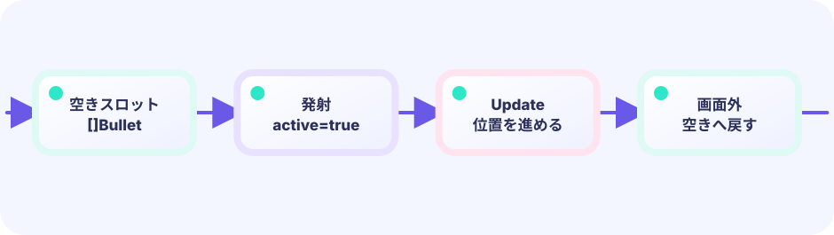
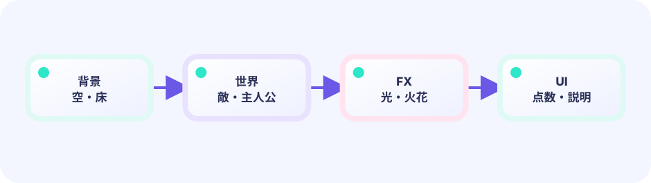

弾
動いて当たる。
bullets []
★★★★★ / PLAYABLE
自弾、敵、爆発粒。役割ごとにスライス。撃った瞬間のマズルは fx、敵の HP は play。
はじめて読む人へ
三分割とは、弾bullets・敵enemies・爆発FXを別リストで管理すること。弾は命中判定、敵はHPと移動、FXは見た目だけを担当します。Updateで三つを順に進め、Drawで敵→弾→爆発の順に重ねます。 Go用語メモ：整数型（int）は小数を持たない数、浮動小数点型（float32/float64）は小数を持てる数、typeはデータの箱の種類を決める言葉、funcは処理をひとまとめにする関数の印です。[]TはTを順番に並べるリスト、appendはその末尾へ一つ足す命令です。Updateは数字と状態を進め、Drawはその結果を絵にします。
このページの1本
説明と次のコードを対応させてから、ゲームで変化を確かめよう。
updateBullets(); updateEnemies(); fx.Update()ひとつのゲーム、自由な見せ方
Updateとgame構造体がゲームの事実を司ります。下の並んだ画面は、同じ自動プレイの位置・箱・ゴールを同時に見ています。違うのはDrawだけで、このデモ以外の見せ方にも自由に差し替えられます。
このコースも LEVEL 01 の Update（数字）とDraw（絵）の独立した境界の上にあります。ここでは同じ状態を別の描き方へ投影する方法を一段深く扱います。
ADVANCED FX の約束
updatePlay() は点数・当たり・勝敗をこれまで通り決めます。Game に fx の箱を足し、fx.Update() は粒など見た目用の時間だけを進め、Draw で fx.Draw() を重ねます。つまり元のゲームルールを触らずに派手にできます。ただし粒が動く演出には、play を変えない独立した fx.Update() は必要です。


PLAYABLE / LIVE GO + マウス
移動とショット。敵撃破の爆発は fx。リスト数を LIVE GO で確認。
DEEP DIVE / THREE LISTS
弾と敵は当たり判定あり。爆発に当たり判定は不要。三分割が見えてきたら応用編のゴールに近いです。
動いて当たる。
bullets []
HP と出現。
enemies []
マズルと爆発。
fx.Burst
TRY IT / SPLIT
弾・敵・演出。どれが欠けても別の壊れ方をする。
IN THE DEMO
敵を fx 粒子に格下げしない。
type Game struct {
bullets []bullet
enemies []enemy
fx vfxfx.System
}WHY THREE?
弾は直線、敵はAI、FXは寿命。
WHY NOT CONVERT?
敵を粒に変えると当たり判定のバグが残る。
TRY NEXT
タイル地図と押し演出。
FEEDBACK